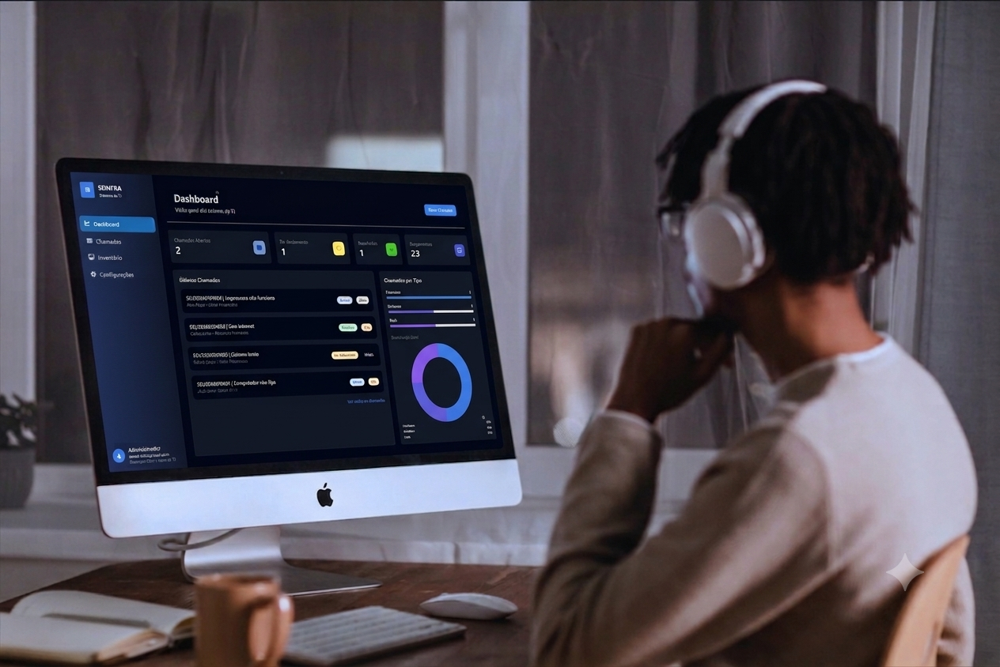

Assistente de Tecnologia, Lógica e Atendimento de Suporte
O ATLAS é um agente de IA, que atua em setores de tecnologia — responsável por receber chamados, coletar dados e acompanhar o usuário durante todo o atendimento, tudo pelo WhatsApp. E esta versão DEMO conta com:
Dados fictícios · Sem integração com sistemas reais · Memória resetada ao recarregar
O ATLAS integra WhatsApp, IA e um sistema de gestão de chamados em um único fluxo automatizado — do primeiro contato até a resolução do problema.
O usuário envia uma mensagem e o ATLAS responde em segundos, coletando nome, setor e a identificação do equipamento logo na primeira conversa. Após a coleta, o ATLAS solicita apenas a descrição do problema e mantém os dados do usuário salvos.
Agente integrado ao Gemini via OpenRouter, com memória de conversa persistente em PostgreSQL, onde ele mantém um padrão de busca das 20 ultimas interações no chat, para não perder o contexto da conversa e manter a linha de raciocínio intacta.
O ATLAS pode ser integrado em um sistema de gestão e é capaz de abrir o chamado automaticamente no sistema, executar ações e notificar equipe da abertura do novo chamado, enquanto mantém o usuário informado sobre seu andamento.

O ATLAS nasceu de uma necessidade real em um ambiente corporativo de TI — transformar um processo manual, fragmentado e lento em um fluxo automatizado, rastreável e eficiente.
O usuário relata o problema e o ATLAS registra, classifica e abre o chamado automaticamente — sem depender de um técnico disponível no momento.
O usuário é notificado a cada atualização do chamado, sem precisar ligar ou ir pessoalmente até a TI perguntar sobre o andamento.
Os técnicos recebem os chamados organizados por prioridade e tipo, com todas as informações necessárias para agir rapidamente.